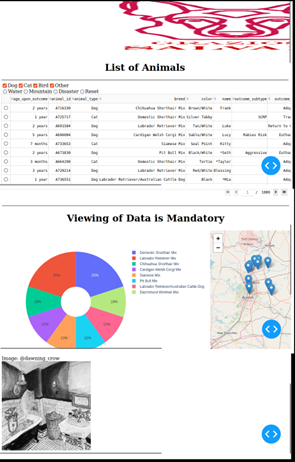

<h1>Cole Mitchell Portfolio</h1>
<h3>Original artifact and Code Review</h3>
<div><iframe src="https://drive.google.com/file/d/1il48dbsTRJhKSmMl_s84E-OTGJJGzllK/preview" width="900" height="600" "></iframe>
  </div>
<br>
<!-- Credit Constantin De La Roche @ https://stackoverflow.com/a/60363693 -->
<div><!-- Lightweight client-side loader that feature-detects and load polyfills only when necessary -->
<script src="https://cdn.jsdelivr.net/npm/@webcomponents/webcomponentsjs@2/webcomponents-loader.min.js"></script>

<!-- Load the element definition -->
<script type="module" src="https://cdn.jsdelivr.net/gh/zerodevx/zero-md@1/src/zero-md.min.js"></script>

<!-- Simply set the `src` attribute to your MD file and win -->
<zero-md src="artifactwork.md"></zero-md></div>
